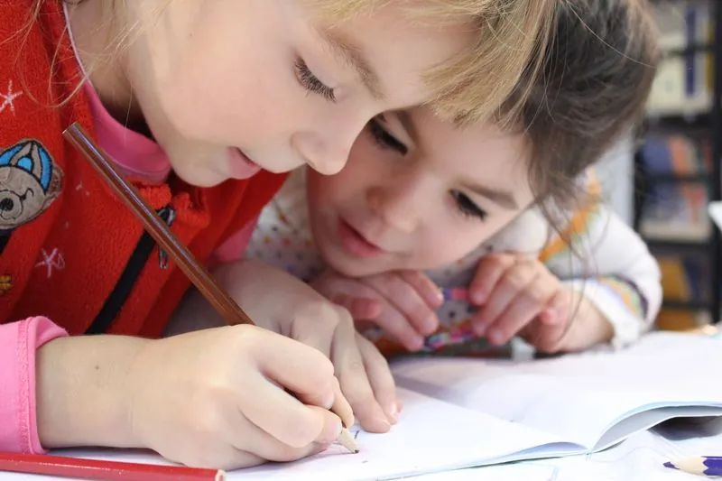

[PERLU DATA: cerita orang tua murid 1]
[PERLU DATA: nama orang tua]
[PERLU DATA: jenjang]
Membentuk murid yang berbudi pekerti, cerdas, dan mampu berpikir kritis.


Kenali Sedaya Bintang dari dekat.
Si kecil dilatih Budi Pekerti, menggunakan Bahasa Mandarin, Inggris, dan Indonesia, serta berpikir kritis melalui STEAM.
KB, TK, dan SD sudah dibuka.


Usia 12–15 tahun
Usia 15–18 tahun

Isi data singkat, lalu lanjut tanya tim admisi lewat WhatsApp.
Ingin langsung bertanya?
0813 8977 2288